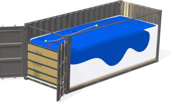

.png)
FLEXITANKS
Se utilizan para transporte de fluidos a granel, es un envase flexible similar a un sachet que se instala dentro de contenedores marítimos estándar de 20 ”. Al retirar el Flexitank, la caja vuelve a ser un contenedor de productos secos.
Los Flexitanques se construyen en polietileno multicapa, de material muy flexible y absorbente que resiste incluso las condiciones más hostiles, debido a esto son extremadamente resistentes a abrasiones y perforaciones.
Fabricados en capacidad de 16,000 litros a 24,000 litros, nuestros Flexitanks son óptimos para transporte de fluidos a granel son la opción perfecta para transportar productos de gdrado alimenticio y productos no alimenticios.
Beneficios
Los tanques flexibles son producidos de acuerdo a la necesidad del cliente, customizandolos y garantizando una higiene insuperable. Los accesorios de liberación rápida de 2 ”y 3” y adaptadores personalizados
- El embalaje y la logística extremadamente asequibles dado que en el mismo contenedor de 20 pies, un Flexitank puede cargar un 40% más de producto, en comparación con la carga en tambores, lo que resulta en ahorros significativos en el flete.
- Mayor rapidez de carga y descarga en comparación con los tambores
- Menos mano de obra en la manipulación y carga / descarga
- No necesita montacargas o grúa elevadora para cargar o descargar el contenedor.
- Confiables dado que se elimina las costuras longitudinales convencionales con construcción de una pieza con un sistema de costos unidireccional que, después de la descarga, se puede reciclar.
- Están fabricados con polímeros de etileno para garantizar la máxima seguridad, resistencia y durabilidad con estrictos controles de calidad.
- Todos los componentes están aprobados por la FDA y BGA
- Producto sin riesgo de contaminación dado que se sella al vacío, no hay oxidación
- Bajo peso, permite mayor carga útil
FLEXITANQUES
Para transporte de líquidos a granel.
Con una capacidad de 16,000 litros a 24,000 litros, nuestros Flexitanks permiten el transporte de fluidos a granel y son la opción perfecta para despachar productos de grado alimenticio y productos no alimenticios.
Productos alimenticios que se pueden transportar incluyen:
Zumos de frutas, Vino, Aminoácidos, Cerveza, Aceites de palma, Aceites de pescado, Agua mineral, Concentrados, Agua potable, Aceites comestibles, Aceites vegetales, Aceites de coco, Jarabe de maíz, Glucosa, Sorbitol, Pasta de tomate, Fructosa, Extractos de malta, Sebo y otros tipos de aditivos alimentarios
Productos no alimentarios que se pueden transportar incluyen :
Aceites base, Detergentes, Aceites lubricantes, Cera de parafina, Lubricantes, Tintas de imprenta, Pinturas, Ceras, Glicerina, Emulsiones, Fertilizantes, Plastificantes, Látex natural, Látex sintético, Aceites crudos, Herbicidas, Desinfectantes, Aceites de lodo de perforación, Fluidos hidráulicos, Alquilatos, Soluciones coloidales, aceite blanco farmacéutico y otros tipos de productos químicos no peligrosos.
Flexitanques para almacenamiento
Además del envío de fluidos a granel, los Flexitanks son perfectos como depósitos para almacenamiento a corto como a largo plazo. Son versátiles para ser usados como contenedores en el sitio que esperan ser cargados para el transporte. También, pueden usarse como soluciones de almacenamiento de líquidos a granel para productos no peligrosos. Esto elimina la necesidad de tambores o sistemas de depósito tradicionales cuando se trata de soluciones de almacenamiento flexibles.
ESPECIFICACIONES
El revestimiento de PE empleado para la fabricación de flexitanques ofrece niveles de rendimiento óptimos en varios sectores del mercado. Está provisto de ojales y este producto mide 60 pulgadas de alto. Los problemas relacionados con los derrames se vuelven inexistentes porque nuestro revestimiento de PE funciona como un sistema de contención secundario y la manga se extiende más allá de la válvula para los tanques de descarga del fondo lo que proporciona una protección adicional.
HEATERPAD SYSTEM
- Entrada y salida: 1 unit
- Dimensión interior: 12.7mm
- Dimensión exterior: 16.8mm
- Longitud de la manguera: 57.0 mt
- Presión de trabajo: menor a 1.5 bar
- Rango de temperatura: menos a 140°C
- Fuente de calor: Vapor
PERSONALIZACIÓN DE FLEXITANQUES
Para satisfacer las necesidades de las industrias, nuestros flexitanques personalizados
cumplen los requisitos exclusivos de nuestros clientes de la mejor manera posible.
Ofrecemos:
- De una a varias capas
- Opciones de carga superior o inferior
- Protección adicional contra la oxidación
- Sistemas de ventilación de aire
- Opciones de cabezal a granel